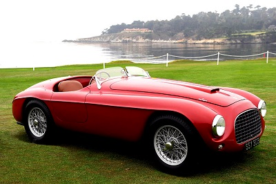
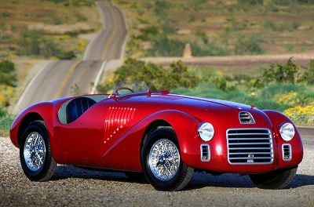

Ta marka była niejako skazana na sukces. Czekano tylko na to, czy jej produkty będą hitem lokalnym, czy może zdominują świat. Dziś dla wielu Ferrari to marka numer 1. Początek marki Ferrari datowany jest na rok 1929. Wtedy Enzo Ferrari otworzył zakład, w którym wytwarzał samochody wyścigowe. W jego warsztacie powstawały auta, które bardzo szybko zrobiły furorę na torach wyścigowych całej Europy.
Ferrari 342 America

W roku 1947 powstał model o oznaczeniu 125 S. Był on wyposażony w silnik V12 o skromnej jak na Ferrari pojemności 1,5 litra. Ten samochód miał być pierwszym autem Ferrari stworzonym poza tory wyścigowe. Jednak tak naprawdę pierwsze Ferrari, które powstało jako klasyczny samochód sportowy przystosowany do normalnego ruchu drogowego, zadebiutowało w 1948 roku. Był to typ 166.
Ferrari 166

Podczas projektowania tego modelu Enzo Ferrari skorzystał z doświadczenia, jakie zebrał, angażując się w sport wyścigowy. W aucie zastosowano rasowy silnik dwunastocylindrowy, podobnie jak w przypadku 125 S, o małej jak na włoską firmę pojemności 2,0. Samochód skonstruował Gioacchino Colombo, były projektant Alfa Romeo. Bezpośrednim następcą tego modelu było Ferrari 342 America.
Ferrari 125 S